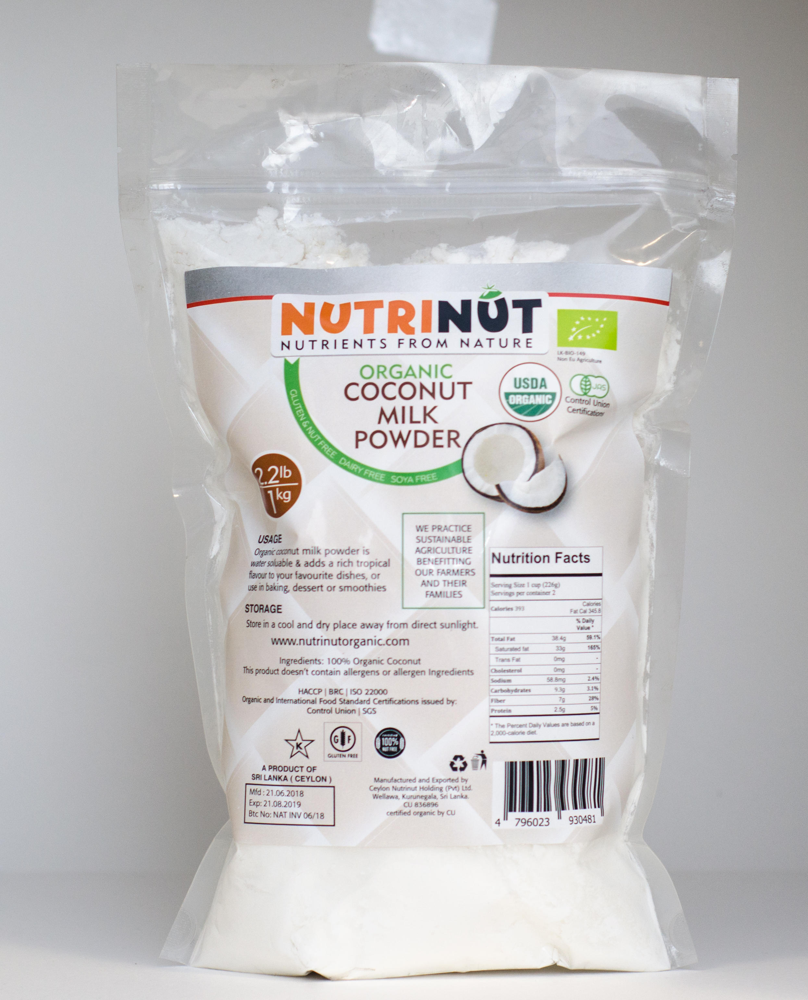

NutriNut Organic Coconut Milk Powder
Your daily essential for healthy cooking and living.
Available Sizes
Description
NutriNut Coconut Milk Powder offers the rich, creamy flavor of coconut milk in a convenient, instant-dissolving powder. Simply mix with hot water to create ready-to-cook coconut milk or coconut cream. It is 100% free from GMOs, Gluten, Soy, and Dairy. This product is Vegetarian, and a Certified Organic version is available.
Key Benefits
- Brain & Energy: Rich in Lauric Acid and MCTs to stimulate metabolism, burn fat, and produce ketones for brain energy.
- Heart Health: Helps improve heart health and supports healthy cholesterol levels.
- Immune Support: Aids the body in fighting harmful bacteria, fungi, and viruses.
- Antioxidants: Contains Vitamins C & E which act as natural antioxidants to combat aging.
- Essential Minerals: Provides Potassium, Magnesium, and Iron to support muscle function, nerve health, and prevent anemia